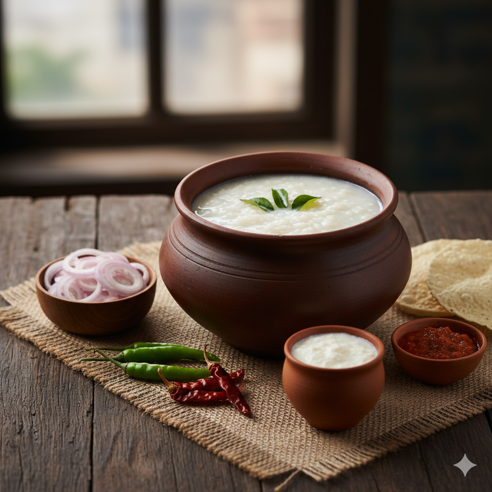
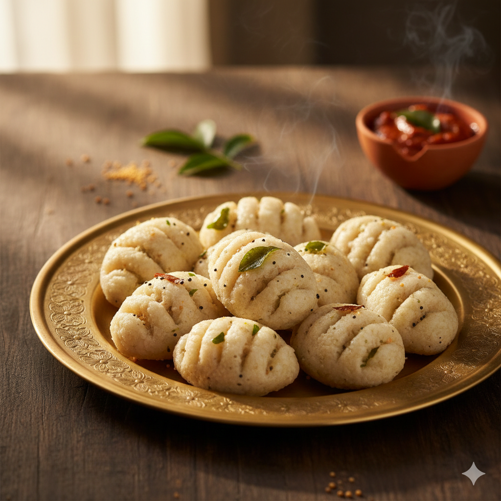

Patti Veedu
Home
Receipe
Contact

cheese masala dosa
A buttery, golden-crisp crepe stuffed with savory potato masala and layered with molten cheese for a perfect fusion of tradition and indulgence.
Today Special !

Palaya Saadham
Tamil Nadu’s cooling probiotic treasure, featuring overnight fermented rice paired with pungent small onions and spicy sides for a gut-healthy morning.

Kozhukatta Pidi
Soft, hand-molded steamed rice dumplings seasoned with rustic spices, delivering a wholesome and comforting taste of authentic village heritage.